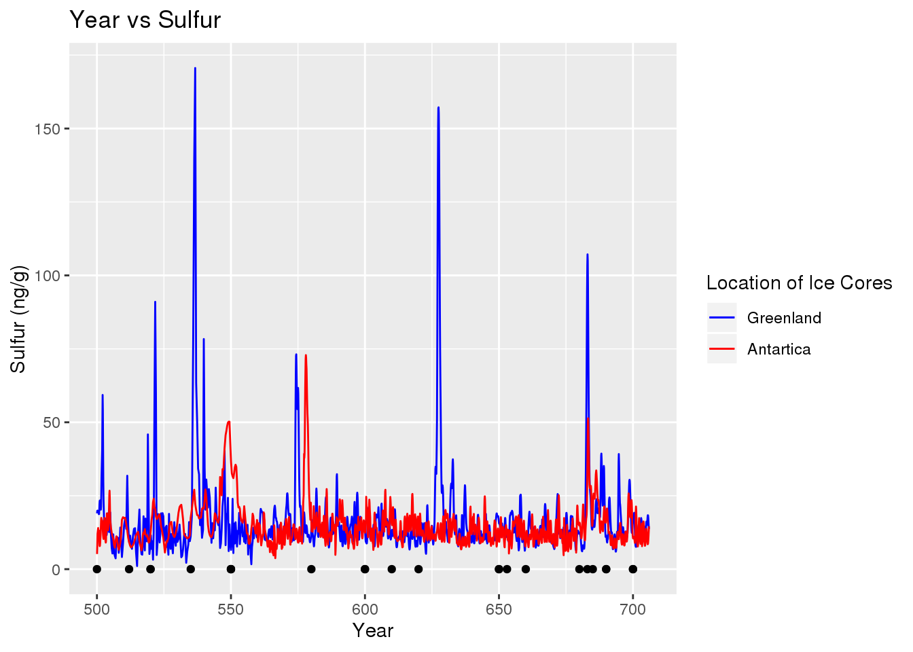
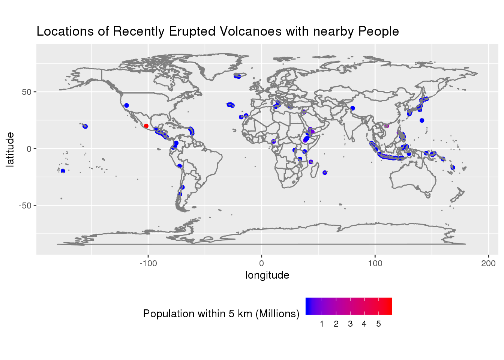

Using the volcano data from tinytuesday I will investigate volcanic eruptions and the affect they have on the environment. I will use the volcano, eruptions and sulfur datasets in order to explore this. The volcano dataset contains the variables
dat1 <- read.csv(here::here("content", "post", "2020-12-10-a-first-post", "data",
"volcano.csv"))
dat2 <- read.csv(here::here("content", "post", "2020-12-10-a-first-post", "data",
"eruptions.csv"))
dat3 <- read.csv(here::here("content", "post", "2020-12-10-a-first-post", "data",
"events.csv"))
dat4 <- read.csv(here::here("content", "post", "2020-12-10-a-first-post", "data",
"sulfur.csv"))To what extent does a volcano eruption impact the atmosphere? To explore this I will attempt to determine the relation between major volcanic eruptions (defined here as any eruption with a vei of 4 or higher) and spikes in sulfur levels in both Greenland and Antartica.
filtered <- dat1 %>%
left_join(dat2, by = c("volcano_number", "volcano_name", "longitude", "latitude")) %>%
filter(vei >= 4, start_year >= 500, start_year <= 706)
ggplot() +
geom_line(data = dat4, aes(year, neem, color = "blue")) +
geom_line(data = dat4, aes(year, wdc, color = "red")) +
geom_point(data = filtered, aes(start_year, 0)) +
scale_color_manual(name = "Location of Ice Cores", labels = c("Greenland", "Antartica"),
values = c(blue = "blue", red = "red")) +
ylab("Sulfur (ng/g)") +
xlab("Year") +
ggtitle("Year vs Sulfur")## Warning: Removed 290 rows containing missing values (geom_path).
## Warning: Removed 290 rows containing missing values (geom_path).
Are there any areas currently at risk from volcano eruptions?
dat1 %>%
left_join(dat2, by = c("volcano_number", "volcano_name", "longitude", "latitude")) %>%
group_by(volcano_name, volcano_number) %>%
filter(start_year >= 1800, start_year == max(start_year)) %>%
select(region, longitude, latitude) %>%
ggplot(aes(longitude, latitude)) +
geom_point() +
borders("world") +
coord_quickmap() +
ggtitle("Location of Recently Erupted Volcanoes")## Adding missing grouping variables: `volcano_name`, `volcano_number`
What volcanoes have erupted the most often?
dat1 %>%
left_join(dat2, by = c("volcano_number", "volcano_name", "longitude", "latitude")) %>%
group_by(volcano_number, volcano_name) %>%
summarize(total = n()) %>%
ungroup() %>%
slice_max(total, n = 10)## `summarise()` regrouping output by 'volcano_number' (override with `.groups` argument)## # A tibble: 10 x 3
## volcano_number volcano_name total
## <int> <fct> <int>
## 1 211060 Etna 241
## 2 233020 Fournaise, Piton de la 194
## 3 282110 Asosan 186
## 4 357120 Villarrica 164
## 5 283110 Asamayama 147
## 6 372030 Katla 132
## 7 300260 Klyuchevskoy 111
## 8 263250 Merapi 110
## 9 332020 Mauna Loa 110
## 10 284010 Izu-Oshima 108